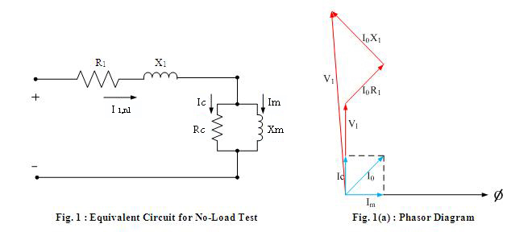

Shakshat Virtual Lab 
INDIAN INSTITUTE OF TECHNOLOGY GUWAHATI
LIST OF SYMBOLS
fr = rated electrical frequency of the motor
V1,rl = the line-to-neutral voltage
l1,rl = the line current
Pnl = the poly-phase electrical input power
I2R = no-load rotor loss
Prot = rotational loss
J = rotor Inertia
nph = number phase
wm = rotor speed
Trot = rotor torque
Rc = core loss resistance
Pcore = no-load core loss
Snl = total apparent power input at no load
R1 = resistance of the motor
X1 = reactance of the motor
X2 = rotor leakage reactance
Xm = megnetizing reactance
X11 = self-reactance of the rotor
Xnl = apparent reactance
Qnl = reactive power at no load
THEORY
The no load test on an induction motor gives information with respect to exciting current and no-load losses. The test is performed at rated frequency and with balanced poly-phase voltages applied to the stator terminals. Readings are taken at the rated voltage, after the motor runs long enough for the bearings to be properly lubricated.

At no load, the rotor current is only the very small value needed to produce sufficient torque to overcome the friction and windage losses associated with rotation. The no-load rotor I2R loss is, therefore, negligibly small. Unlike the continuous magnetic core in a transformer, the magnetizing path in an induction motor includes an air gap which significantly increases the required exciting current. Thus, in contrast to the case of a transformer, whose no-load primary I2R loss is negligible, the no-load stator I2R loss of an induction motor may be appreciable because of this larger exciting current. Neglecting rotor I2R losses, the rotational loss Prot for normal running conditions can be found by subtracting the stator I2R losses from the no-load input power.

The total rotational loss at rated voltage and frequency under load usually is considered to be constant and equal to its no-load value.
Various tests can be performed to separate the friction and windage losses from the core losses. For example, if the motor is not energized, an external drive motor can be used to drive the rotor to the no-load speed and the rotational loss will be equal to the required drive-motor output power. Alternatively, if the motor is operated at no load and rated speed and if it is then suddenly disconnected from the supply, the decay in motor speed will be determined by the rotational loss as
Hence, if the rotor inertia J is known, the rotational loss at any speed wm can be determined from the resultant speed decay as
Thus, the rotational losses at rated speed can be determined by evaluating the above equation as the motor is first shut off when it is operating at rated speed. If the no-load rotational losses are determined in this fashion, the core loss can be determined as
Here, Pcore is the total no-load core loss corresponding to the voltage of the no-load test (typically rated voltage). Under no-load conditions, the stator current is relatively low and, to a first approximation, one can neglect the corresponding voltage drop across the stator resistance and leakage reactance. Under this approximation, the voltage across the core-loss resistance will be equal to the no-load line-to-neutral voltage and the core-loss resistance can be determined as

Provided that the machine is operated close to rated speed and rated voltage, the refinement associated with separating out the core loss and specifically incorporating it in the form of a core-loss resistance in the equivalent circuit will not make a significant difference in the results of an analysis. Hence, it is common to ignore the core-loss resistance and to simply include the core losses with the rotational losses.
Because the slip at no load, Snl, is very small, the reflected rotor resistance R2/Snl is very large. The parallel combination of rotor and magnetizing branches then becomes jXm shunted by the rotor leakage reactance X2 in series with a very high resistance, and the reactance of this parallel combination therefore very nearly equals Xm .Consequently the apparent reactance Xnl measured at the stator terminals at no load very nearly equals X1 + Xm, which is the self-reactance X11 of the stator; i.e.
The self-reactance of the stator can therefore be determined from the no-load measurements. The reactive power at no load Qnl can be determined as
where Snl = nph V1,nl I1,nl is the total apparent power input at no load.
The no-load reactance Xnl can then be calculated from Qnl and Inl as
Usually the no-load power factor is small ( i.e., Qnl >> Pnl ) so that the no-load reactance very nearly equals the no-load impedance.